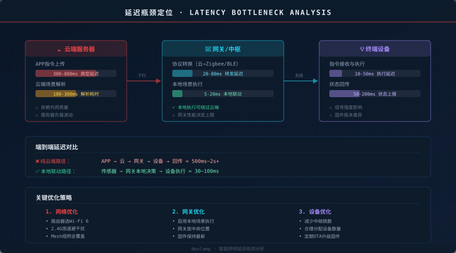
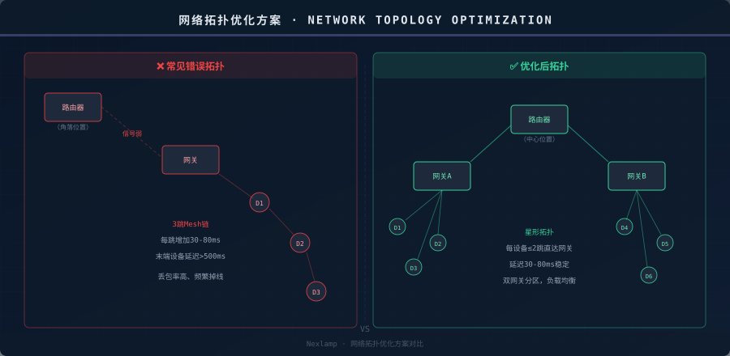
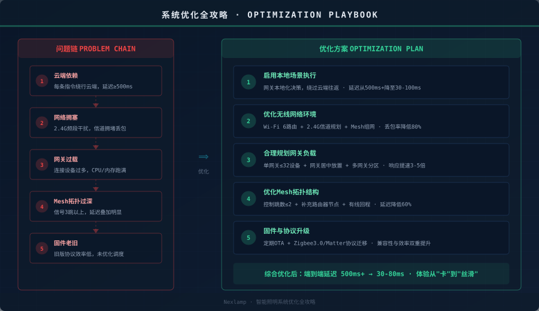

引言
装了一屋子智能灯，满怀期待地喊一声"开灯"——结果等了1秒灯才亮。别人家的智能灯响应丝滑无感，你家却像在看PPT。问题出在哪？
90%的"卡"不是设备问题，而是系统问题。 智能照明是一个"云-网-关-端"的链路，任何一个环节拖后腿，整个体验都会崩。这篇文章从延迟的根源出发，帮你逐一定位并解决。
第一步：理解延迟从哪来

一条灯光控制指令从你的手机到灯泡亮起，典型路径是：
手机APP → 云端服务器 → 网关 → 无线网络 → 灯泡执行
每个环节都有延迟，最慢的那个就是瓶颈：
| 环节 | 典型延迟 | 优化空间 |
|---|---|---|
| 云端往返 | 300-800ms | ★★★★★ 启用本地执行 |
| 网关转发 | 20-80ms | ★★★ 网关升级/合理负载 |
| 无线传输 | 10-50ms | ★★★★ 网络优化 |
| 设备执行 | 10-50ms | ★★ 固件升级 |
瓶颈一：云端依赖——最大的延迟杀手
问题本质
大部分轻智能设备（Wi-Fi灯泡、智能插座）的控制逻辑跑在云端。你说"开灯"，指令先飞到云端服务器，云端解析后再飞回来。哪怕网络再好，这个往返也至少300ms起，遇上服务器负载高或网络波动，1-2秒都正常。
解决方案：启用本地场景执行
如果你的系统有网关（如涂鸦网关、Home Assistant），一定要把联动场景配置为本地执行：
- 涂鸦生态：在APP中创建"智能场景"时选择"本地执行"（需网关支持）
- Home Assistant：所有自动化默认本地运行，天然优势
- Matter协议：设备原生支持本地发现与控制，无需云端中转
瓶颈二：2.4G Wi-Fi 拥塞——最常见的隐形坑
问题本质
几乎所有智能家居设备都工作在2.4GHz频段。你的路由器、邻居的路由器、蓝牙设备、微波炉都在抢占这个频段。当信道拥堵时，丢包率飙升，设备频繁重传，表现就是"时灵时不灵"。
解决方案
瓶颈三：网关过载——被忽视的性能瓶颈
问题本质
很多人一个网关带40-50个设备，觉得"还能连上"就没问题。但网关的CPU和内存是有限的——设备数超过一定阈值后，处理每条指令的耗时开始线性增加，联动的实时性急剧下降。
解决方案
- 单网关建议≤32个设备（Zigbee规范建议上限）
- 网关居中放置：确保到各设备的信号质量均衡
- 多网关分区：大户型按楼层/区域部署多个网关，各自管理本地设备
- 固件保持最新：厂商经常在固件中优化调度算法和内存管理
瓶颈四：Mesh拓扑过深——延迟叠加的陷阱

问题本质
Zigbee设备之间会自动组Mesh网，信号弱的设备会通过其他设备中继。每增加一跳，延迟增加30-80ms。如果一个灯泡距离网关3跳，光是无线传输就吃了100-240ms。
解决方案
- 控制跳数≤2：通过合理放置网关和补充路由器节点（Zigbee Router），减少必要的跳数
- 有线回程：Mesh组网时优先用有线回程连接节点，无线回程会叠加延迟
- 补充常电设备：常电Zigbee设备（如智能插座）天然充当中继节点，合理分布可优化路由路径
- 定期重建拓扑：部分网关支持"重建Mesh"功能，可优化路由表
瓶颈五：固件老旧——效率的隐性损耗
问题本质
旧固件可能使用低效的通信协议栈、未优化的调度算法，甚至存在已知的延迟bug。很多用户装好设备从不升级固件，白白浪费了厂商的优化成果。
解决方案
- 定期检查OTA升级：每月检查一次设备固件更新
- Zigbee 3.0迁移：如果设备还跑在Zigbee 1.2上，升级到3.0能显著改善组网效率
- Matter就绪：新购设备优先选Matter协议，本地控制+跨生态兼容
优化效果总结

| 优化措施 | 延迟改善 | 实施难度 |
|---|---|---|
| 启用本地场景执行 | 500ms+→30-100ms | ★☆☆☆☆ |
| Wi-Fi 6+信道优化 | 丢包率降80% | ★★☆☆☆ |
| 网关分区+居中放置 | 响应提速3-5倍 | ★★☆☆☆ |
| Mesh拓扑≤2跳 | 延迟降60% | ★★★☆☆ |
| 固件/协议升级 | 效率提升20-40% | ★☆☆☆☆ |
结语
智能照明"卡"不是设备不行，是系统没调好。先定位瓶颈（云端？网络？网关？拓扑？固件？），再针对性优化，效果立竿见影。如果只能做一件事——先把本地场景执行开起来，这是投入产出比最高的优化。